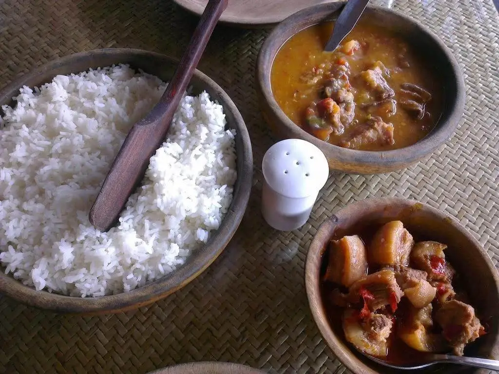
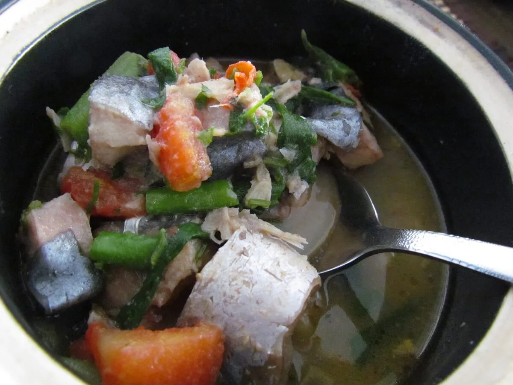
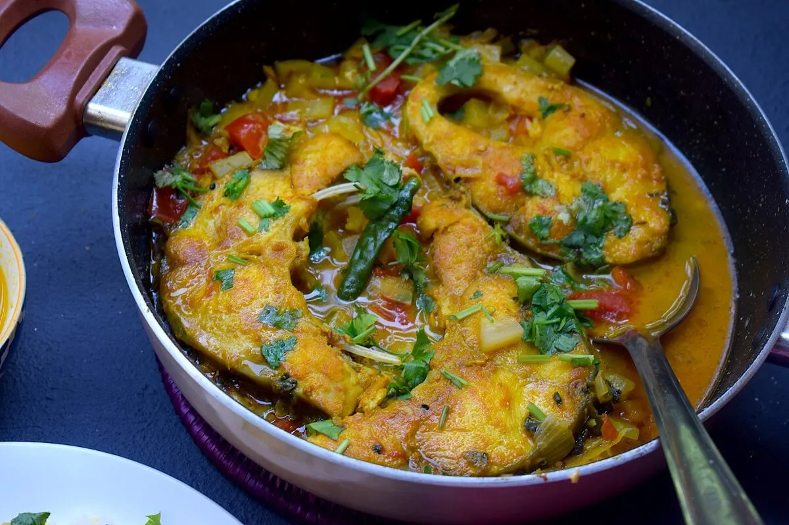
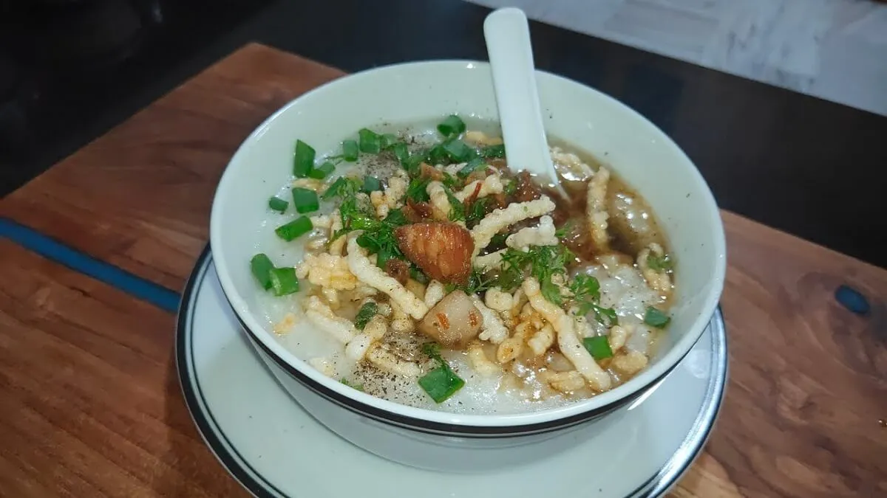
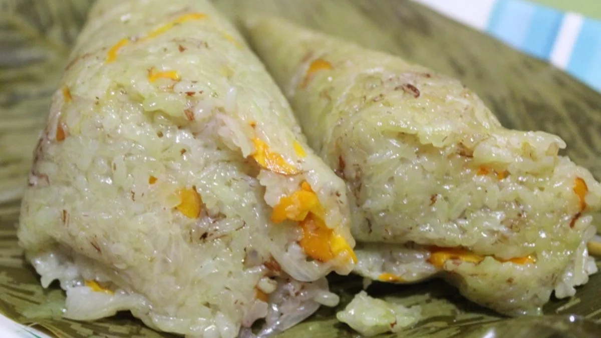
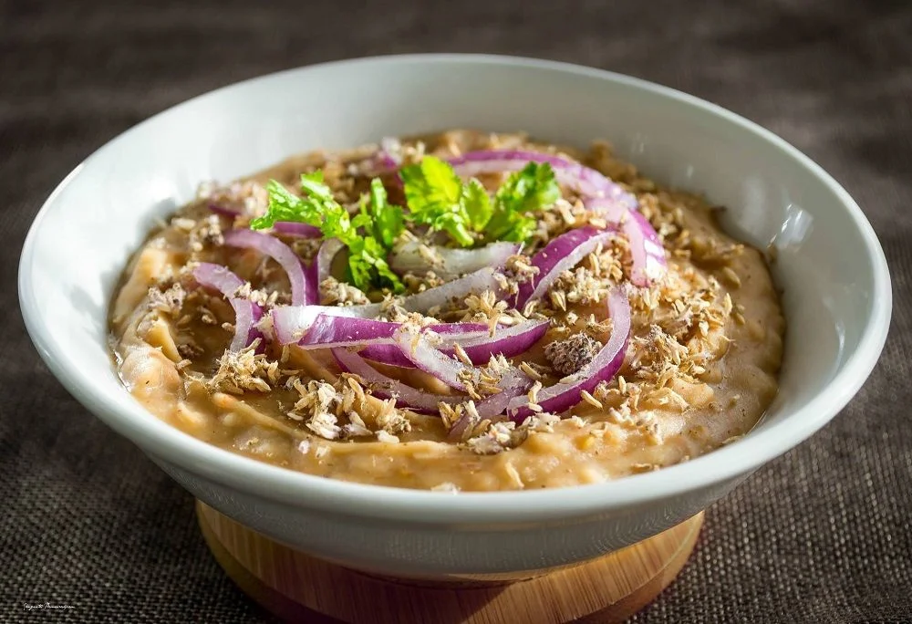
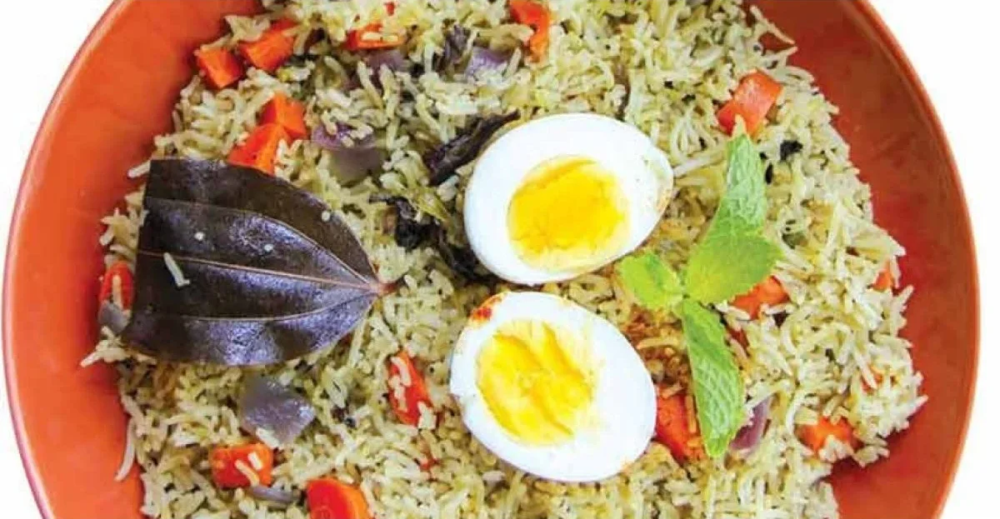
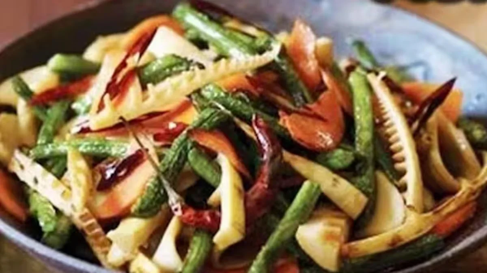
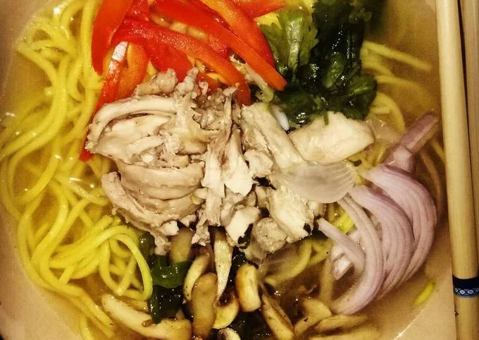
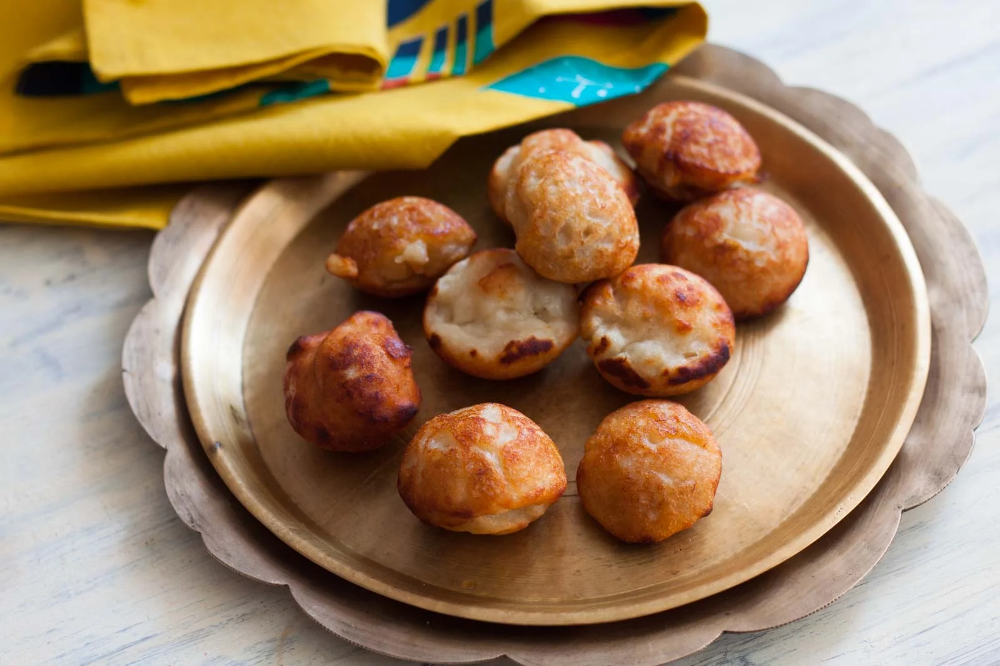

With a broad spectrum of cultures, traditions, and faiths, India is one of the most popular tourist destinations in the world. It is not only rich in diverse civilizations, but also in diverse dishes prepared using varied cooking skills and procedures.
In India, you’ll sample a wide range of cuisines from state to state, each with its own unique flavour profile. Every state has its own set of gastronomic delicacies, as well as unique recipes and cooking techniques. Because each household prepares these foods differently, no two servings will ever taste the same.
North East India is one of the top areas in the world for foodies and a must-see destination for foodies. You’ll want to try more of the meal once you’ve tasted it. The northeast of India is also a gourmet food destination, with a plethora of culinary delights to be discovered.
Here are the 10 famous dishes of northeast India to try out:
1. Smoked Pork Curry
Naga pig curry is perhaps one of India’s most delectable non-vegetarian dishes in Nagaland. The juicy smoked pork is cooked in a delightful spicy curry. To make it savoury and filling, bhoot jholokia and bamboo shoots are added.
Steamed rice is commonly served with curry. A lot of restaurants throughout the world have added this delicious curry to their menus. Every non-vegetarian should try it! Read Also: 10 Famous Destinations to Visit in Nagaland.
2. Ngatok
Ngatok is distinguished by its cooking method, which involves the use of hot stones. The stones are heated before being inserted into the flesh. Ginger, garlic, local peppers, coriander, basil leaves, and chilies are common ingredients in the recipe. These spices are used to marinate the meat before it is cooked on heated stones.
The stones, as well as the meat, are wrapped in leaves and cooked for 20-30 minutes. Rice is offered with the Ngatok. Ngatok, or “stone-fry beef”, is one of Arunachal Pradesh’s most well-known and interesting cuisines for this reason.
3. Fish Tenga
Fish Tenga is one of the most popular and hallmark dishes of Assam. The addition of a souring agent, which gives the meal an acidic, tangy flavour, is a fundamental ingredient in Tenga.
To produce this dish, a number of souring agents can be used, ranging from the more common lemon, star fruit, and tomatoes to the more exotic elephant apple, roselle leaves, and garcinia. You may enhance the flavour by adding fresh spices. Read Also: Top 20 Beautiful Places to See in Assam.
4. Sanpiau
This Mizoram street food is really popular. Sanplaiu snacks are handcrafted delicacies that are packed and sold on Mizoram’s streets. Rice porridge, finely ground rice, crushed black pepper, fresh coriander paste, tangy fish sauce, and other spices are commonly used. Also, read 10 Most Popular Places to Visit in Mizoram
5. Bhangui
The flavorful gobinda bhog rice, which is also used in West Bengal, is used to make the renowned sticky rice dish.
The rice is sun-dried after being wrapped in banana leaves before being boiled with ginger, garlic, and onions. Bangui pairs well with any fish or meat dish, including Tripura’s pork-based wahan mosdeng.
6. Iromba
A simple healthful dish composed of mashed potatoes, fermented fish, and fiery chillies, as prepared by the Meitei community. This fish delicacy is known for its harsh, pungent flavour, yet it is a treat in Manipur.
7. Jadoh
While the majority of Khasi cuisine includes some type of meat, vegetables are secondary and are only eaten as salads. Most people like jadoh that has been cooked in pork fat. The blood-based dish Jadoh snam is also popular among the locals.
Rice is cooked with meat and very little or no oil, with pork or chicken blood added to give the rice a characteristic metallic flavour. Jadoh is a popular dish of Meghalaya. Also, read 20 Most Beautiful Destinations to Visit in Meghalaya.
8. Chikhvi
This dish is most usually served at lunch and dinner for Tripura residents. It’s made with stir-fried bamboo shoots and slices of succulent pork. This dish is smokey and decadent.
9. Gyathuk
This amazing Sikkim cuisine is served as a noodle soup. This flavorful meal can be served with or without meat and is often filling. This delectable dish is enhanced by natural and pleasant spices. Read Also: Top 10 Famous Places to visit in Sikkim.
10. Koat Pitha
Chinese food has inspired Mizo cuisine. The state’s cuisine is known for incorporating fermented pork fat, also known as sa-um, in its recipes. One of the most popular Mizo snacks is koat pitha, which is made by deep-frying bananas coated in rice flour and jaggery paste. Koat pitha, or banana fritters, is frequently served with zu, a unique Mizo tea in Mizoram.